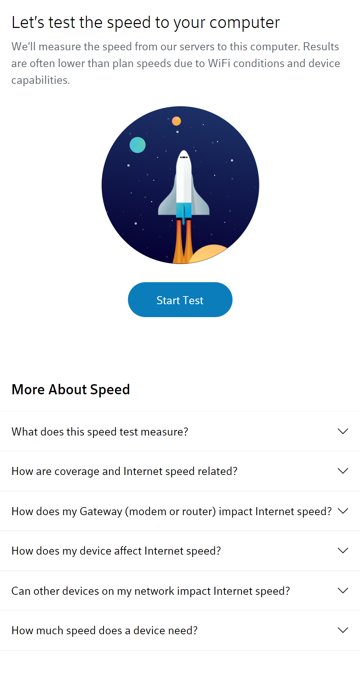

Hick's Law
- Organization or Company Name: Rocky Mountain ATV
- Website Address: https://www.rockymountainatvmc.com/casual
- Mobile Screenshot:
- Description: Rocky Mountain ATV exemplifies Hick's Law by using many drop down menus to make decision making easier for users interfacing on the website.
Fitt's Law
- Organization or Company Name: Xfinity
- Website Address: https://speedtest.xfinity.com/
- Mobile Screenshot:

- Description: Xfinity exemplifies Fitt's Law by using large buttons in the middle of its different pages. The time taken for a user to use their cursor on buttons is shorter because of this.